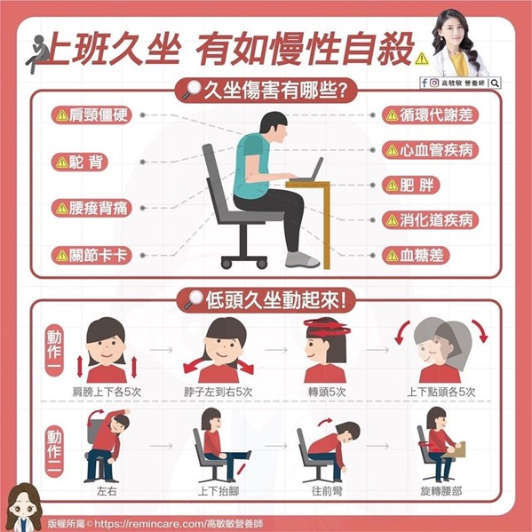
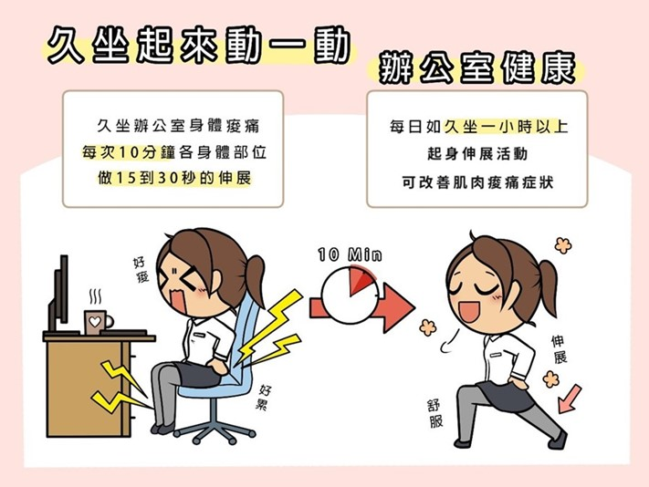
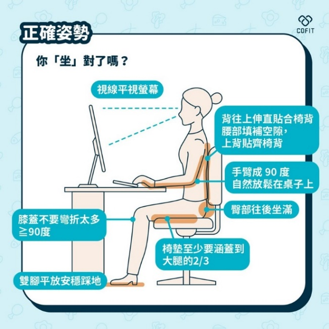
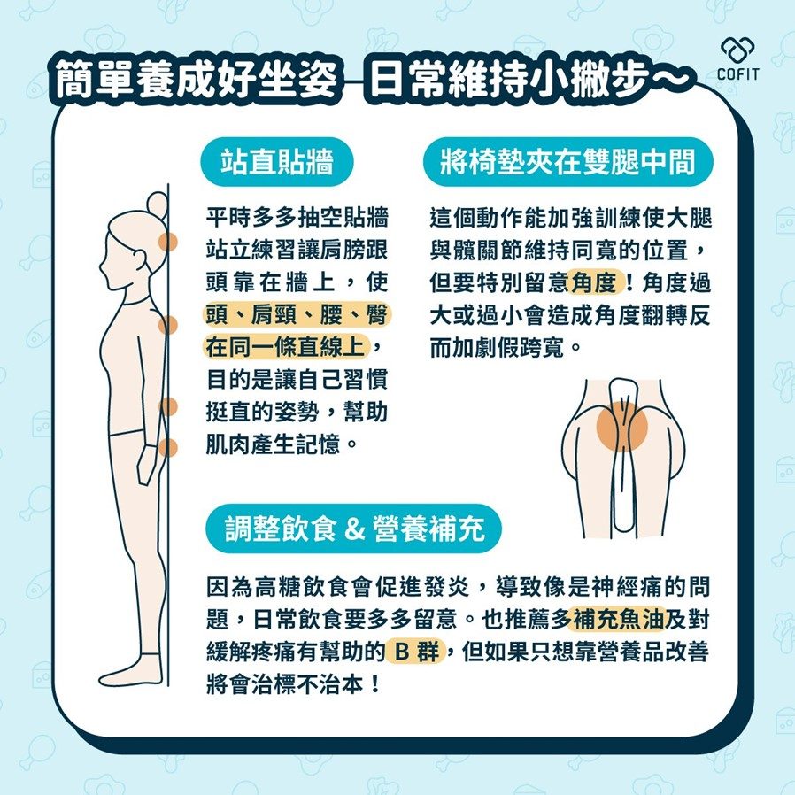

月號－健康大小事
月號－健康大小事現代上班族常因工作關係長時間坐著，導致身體僵硬、腰痠背痛，更可能提高罹患慢性疾病的風險。對此衛生福利部國民健康署調查，台灣18歲以上民眾每天平均坐著超過6小時，身體活動不足率高達54％。而久坐超過9小時的族群，死亡風險竟比坐不到7小時的人多出22％。 |
||
| 「長期久坐」恐對身體造成9項慢性傷害 | ||
高敏敏營養師坦言，其實久坐久了，或是低頭久了，除了腰痠背痛，對其他身體部位傷害也很大......而營養師也分享了9項「久坐傷害」給上班族、低頭族，以及經常久站久坐、沒運動的朋友們參考！ |
|
|
|
||
|  | ||
| 解決腰痠背痛就靠8個實用的伸展小步驟 | ||
除此之外，也趕緊來學學8個實用伸展的小步驟，除了解決腰痠、背痛、脖子酸的困擾之外，還能促進循環代謝！ |
|
|
伸展運動可以讓身體有持續活動，降低身體肌肉因不活動所帶來的血液循環和肌肉僵硬，幫助自我遠離肌肉痠痛。建議久坐一小時，就可以起來走動10分鐘，讓各身體部位做15到30秒的伸展，可改善肌肉痠痛症狀。 |
||
|  | ||
| 這樣「坐」就對了！跟壞習慣說掰掰 | ||
其實不只是辦公，平常坐著的時候也可以多多注意。 |
||
|  | ||
| 養成好坐姿的3個日常練習 | ||
一時之間要調整坐姿並不是一件簡單的事，推薦可以慢慢改善讓身體適應正確的姿勢，使肌肉產生記憶。這樣一來在日後無論是坐著或是站著，挺胸的時候身體自然會挺成直線。 |
||
|  | ||
千禧之愛健康基金會董事祝年豐說「不可忽略久坐對於健康的威脅！」如何減少久坐，減少腹部脂肪囤積？建議上班族，養成站著講電話的習慣，辦公時每小時起身活動三至五分鐘；選擇小容量的杯子，才能經常起身倒水、上廁所。此外，工作時，應該少坐電梯，多爬樓梯。搭車上下班，不要急著搶位子，最好多站、少坐。搭車回家時，建議提早一站下車，讓自己有機會多走走路。 |
||
透過這些日常例子，你可以改變工作習慣，使自己更加健康、有活力。不再讓辦公室生活成為你變成「軟骨頭」的原因！從今天開始，踏出改變的第一步，成為一個充滿活力和健康的辦公室戰士！ |
||
資料來源
1. 談長期久坐宛如慢性傷害！上班族＆低頭族必學的8個伸展小步驟｜Mombaby 媽媽寶寶懷孕生活網 |
||